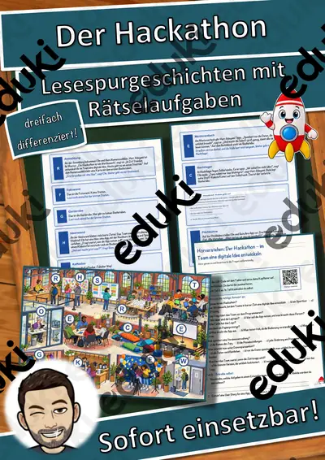
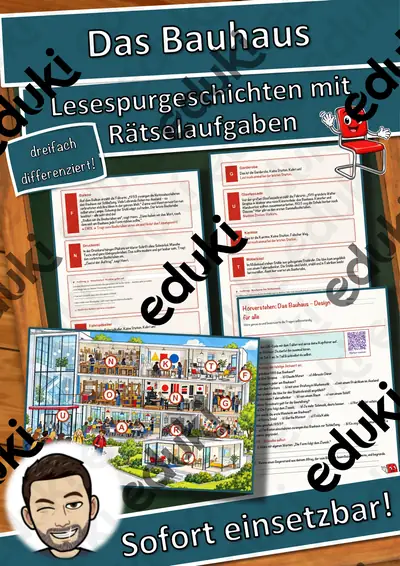

Lesespur: Produktdesign im Alltag: vom Problem zum Prototyp – Lesespurgeschichte mit Rätseln (Klasse 9)
Produktdesign im Alltag – vom Problem zum Prototyp – Lesespurgeschichte Kunst (Klasse 9)Begib dich mit deiner Klasse auf eine spannende Lesespur durch eine Designhochschule! Anouk und Leander besuchen den Tag der offenen Tür und fragen sich: Wer denkt sich eigentlich aus, wie ein Wasserkocher aussieht? Im Beobachtungsraum lernen sie, dass gutes Design mit einem echten Problem beginnt, im Skizzenstudio und in der Modellwerkstatt verfolgen sie den Weg von der ersten Idee bis zum Prototyp, und im Ergonomielabor testen sie, ob ein Griff zur Hand passt. In der Materialbibliothek vergleichen sie Werkstoffe, im Farbstudio entdecken sie die Produktsprache, im Reparaturcafé geht es um Nachhaltigkeit, und im Testlabor erleben sie, was Design für alle bedeutet. Ihre Schreibtischlampe Leuchti ist immer dabei. Am Ende jedes Abschnitts verrät ein Hinweis den nächsten Raum auf dem Hausplan – nur wer richtig liest und mitdenkt, findet den Weg und sammelt alle geheimen Buchstaben zum Lösungswort.
Die perfekte Lesespur für den KUNSTUNTERRICHT der 9. Klasse – ideal als Einstieg in ein eigenes Designprojekt: Sie verbindet motivierendes, sinnentnehmendes Lesen mit dem Wissen über Gestaltung, Nutzen und Verantwortung. Das Material ist SOFORT EINSETZBAR und in DREI DIFFERENZIERUNGSSTUFEN (leicht ★ / mittel ★★ / schwer ★★★) angelegt.WICHTIG: Das komplette Material ist sowohl in FARBE als auch in SCHWARZ-WEISS enthalten – ideal zum Sparen von Druckkosten.DAS IST ENTHALTEN
- Lesespurgeschichte in 3 Niveaus (leicht, mittel, schwer)
- farbiger Hausplan als Suchkarte
- Hörverstehen mit QR-Code zur MP3 (selbstständiges Hören mit Kopfhörern)
- vier Aufträge auf dem Weg: ein Verbinde-Rätsel, ein Quiz, eine Rechenaufgabe und ein Steckbrief
- Rätselseite (Wörter-Suchsel + Wissensfragen)
- Ausmalbild zum Thema
- ausführliches Lösungsblatt für die Lehrkraft
- alles zusätzlich als komplette Schwarz-Weiß-VarianteSO GEHT DIE LESESPURDie Jugendlichen lesen ab START, entnehmen dem Text einen Hinweis auf einen Raum in der Hochschule, suchen ihn auf dem Plan und lesen bei dieser Station weiter. An jeder richtigen Station gibt es einen Sammelbuchstaben. Eingebaute Sackgassen (Mensa, Hausmeisterloge, Kopierraum, Fahrradkeller) gehören zwar zur Hochschule, sind aber keine Stationen und dienen der Selbstkontrolle. Am Ende werden die gesammelten Buchstaben umgestellt und ergeben ein geheimes Lösungswort. (Die Lösungen sind selbstverständlich nur im Lösungsblatt für die Lehrkraft enthalten.)INHALTLICHER SCHWERPUNKTDie Jugendlichen verstehen Produktdesign als Gestaltung von Gebrauchsgegenständen, vollziehen den Designprozess vom beobachteten Problem über Skizzen, Modell und Tests bis zum Prototyp nach, beurteilen Ergonomie, Material und Produktsprache und lernen, warum Reparierbarkeit, Kreislaufdenken und barrierefreies Design wichtig sind.ABGEDECKTER LEHRPLAN (Klasse 9, Kunst)
- Kunst (LehrplanPLUS Bayern) – Klasse 9 „Design – Gestaltung von Gebrauchsgegenständen“: Design als Gestaltung von Gebrauchsgegenständen verstehen, den Designprozess vom Problem bis zum Prototyp nachvollziehen, Ergonomie, Material und Produktsprache beurteilen sowie Nachhaltigkeit und Design für alle berücksichtigen.
- Deutsch – Lesen mit Texten und Medien umgehen: Lesestrategien anwenden, Texten gezielt Informationen entnehmen, sinnentnehmend und selektiv lesen; Zuhören: einem Sachhörtext konzentriert folgen (Hörverstehen mit MP3).
- Mathematik – Rechnen im Sachzusammenhang.
- Fächerübergreifend / Kompetenzen: Technik, Bildung für nachhaltige Entwicklung, Inklusion, berufliche Orientierung (Designberufe), genaues Lesen und Prüfen.
Geeignet für Freiarbeit, Stationenlernen, Vertretungsstunden, Wochenplan, Projekttage und Homeschooling. Klassenstufe 9 (differenziert einsetzbar auch in Klasse 8 und 10).
Ähnliche Materialien

Design Lückentext mit Wortspeicher Hörverstehen und Suchsel

Lesespur: Pop Art: Kunst aus dem Alltag – Lesespurgeschichte mit Rätseln (Klasse 9)

Lesespur: Der Wasserkocher – Lesespurgeschichte mit Rätseln (Klasse 8)

Lesespur: Der Hackathon: im Team eine digitale Idee entwickeln – Lesespurgeschichte mit Rätseln (Klasse 10)

Lesespur: Werkzeuge im Alltag: wie sie uns die Arbeit leichter machen – Lesespurgeschichte mit Rätseln (Klasse 1)

Lesespur: Algorithmen im Alltag: Schritt für Schritt zum Ziel – Lesespurgeschichte mit Rätseln (Klasse 5)

Lesespur: Das Bauhaus: Design für alle – Lesespurgeschichte mit Rätseln (Klasse 10)